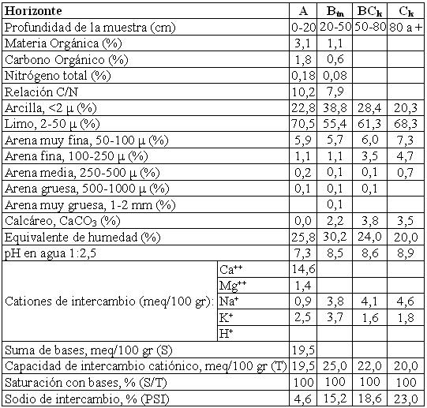

Natrustol típico, franca fina, mixta, térmica (calcárea)
Capacidad de uso: IVsc
La Serie Sagrada Familia es un suelo moderadamente bien drenado desarrollado sobre sedimentos eólicos en sectores planos (relieve subnormal) con gradientes que no superan el 0,5% y escurrimiento lento. Es un suelo bien desarrollado con un horizonte Bt con arcillas sódicas en el subsuelo (a partir de 20 cm de profundidad) que afectan el uso del suelo, limitante que se agrega a los aspectos climáticos propios de la región. Presenta un horizonte A de 20 cm de espesor con estructura en bloques, neutro a ligeramente alcalino. Continúa hacia abajo el horizonte Btn con enriquecimientos de arcillas iluviales y alcalino sódico, de textura franco arcillo limosa y estructura en prismas irregulares y con la presencia de carbonatos libres en la masa del suelo: se extiende hasta 50 cm de profundidad. El material originario del suelo se encuentra a 80 cm fuertemente alcalino con aumento del pH y de los carbonatos libres.
Descripción del perfil típico:
El perfil modal de la serie Sagrada Familia fue descripto a 20 km al NE de la localidad de Río Primero, departamento del mismo nombre, provincia de Córdoba.
A 0-20 cm; color en húmedo pardo grisáceo muy oscuro (10YR3/2), franco limoso, estructura en bloques subangulares medios moderados, friable en húmedo, ligeramente plástico, no adhesivo, pH 7,3, raíces comunes, límite inferior abrupto.
Btn 20-50 cm; color en húmedo pardo oscuro (10YR3/3), franco arcillo limoso, estructura en prismas irregulares fuertes; friable a ligeramente firme en húmedo, plástico, adhesivo, pH 8,5, ligera reacción al ClH en la masa del suelo, barnices comunes de arcilla y humus, vestigios de raíces, límite inferior claro y suave.
BCk 50-80 cm; color en húmedo pardo amarillento oscuro (10YR3/4), franco arcillo limoso a franco limoso, estructura en prismas y bloques débiles, friable en húmedo, ligeramente plástico, ligeramente adhesivo, pH 8.6, barnices escasos finos, moderada reacción al ClH en la masa del suelo, límite inferior gradual.
Ck 80 cm a mas; color en húmedo pardo (7,5YR5/4), franco limoso, masivo, no plástico, no adhesivo, muy friable en húmedo, pH 8,9, violenta reacción al ClH en la masa del suelo.
Cuadro Nº31
Datos analíticos Serie SAGRADA FAMILIA
Situación: Latitud: 31º11’S Longitud: 63º31’O Altitud: 190 m.s.n.m.
 |